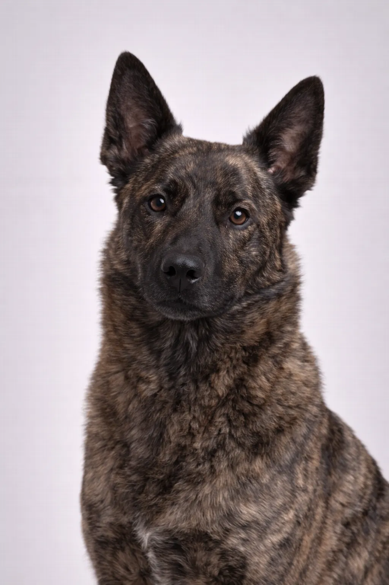

Hollandsk Gjeterhund
En intelligent gjeterhund som utmerker seg i å lære og elsker å ha en oppgave.
22-24 in
51-70 lbs
Rasevurderinger
Temperament
Oversikt
En allsidig nederlandsk gjeterhunderase kjennetegnet av sin brindlefarget pels. Hollandsk Gjeterhund er pålitelige, atletiske hunder som utmerker seg i mange oppgaver.
Temperament
Hollandsk Gjeterhund er kjent for å være pålitelig, oppmerksom og lydig. De er utmerkede med barn og er fantastiske familiehunder. Deres intelligens og iver etter å behage gjør trening morsomt. Tidlig sosialisering hjelper dem å utvikle seg til veltilpassede følgesvenner.
Helse
Generelt friske med en levealder på 11-14 år. Vanlige helseproblemer inkluderer hofteleddsdysplasi og oppblåsthet. Regelmessige veterinærbesøk og forebyggende stell er viktig. Å opprettholde en sunn vekt bidrar til å forebygge mange helseproblemer.
Mosjon
Høyenergirase som krever kraftig daglig mosjon – minst en time aktivitet. De trives med aktive familier som liker friluftsliv. Mental stimulering gjennom trening og puslespilleker er like viktig. Uten tilstrekkelig mosjon kan de utvikle atferdsproblemer.
⦿ Passer Denne Rasen for Deg?
✓ Best for
- Erfarne eiere
- Hundesportentusiaster
- Aktive familier
✗ Ikke ideelt for
- Førstegangseiere
- Stillesittende eiere
Vår vurdering: En allsidig nederlandsk gjeterhunderase kjennetegnet av sin brindlefarget pels. Hollandsk Gjeterhund er pålitelige, atletiske hunder som utmerker seg i mange oppgaver.